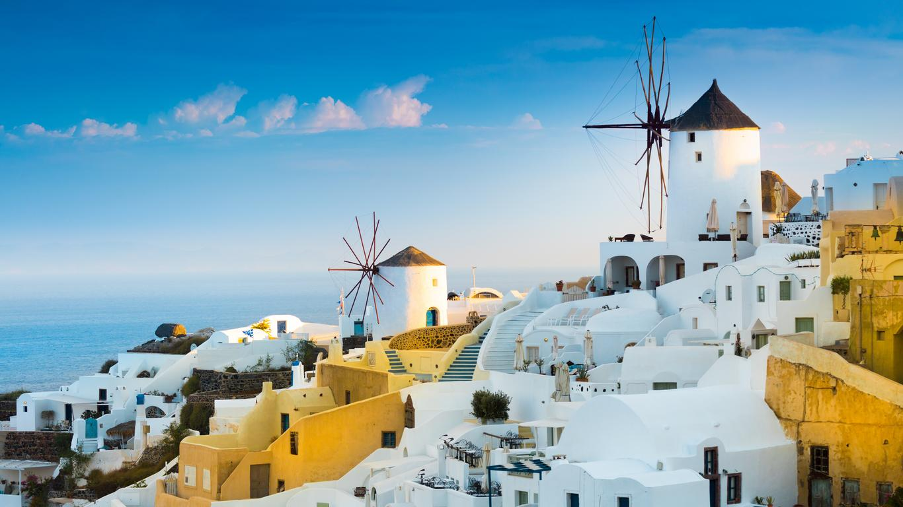
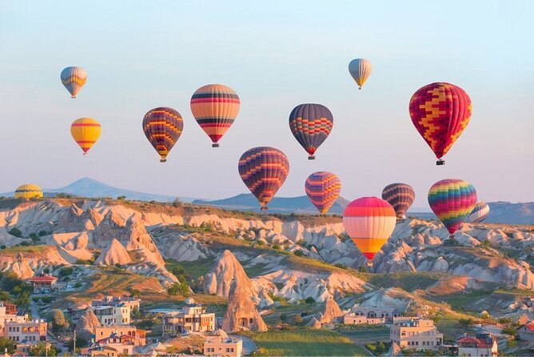

A “cidade perdida dos Incas”, ou Machu Picchu, que significa "velha montanha" em quéchua, língua nativa, foi uma das cidades do chamado "Império Inca". O lugar ainda tem boa parte de suas construções originais e permite aos visitantes desvendar um pouquinho de um povo que guardava um conhecimento muito avançado, especialmente para a época em que lá viveram. O sítio arqueológico está 2.450 metros acima do nível do mar, em uma localização que desperta interesse justamente por ser de difícil acesso.
Por: Vinicius Dantas
Ler mais

Mykonos é um dos destinos mais desejados da Grécia. Com fama de ser a mais animada das ilhas gregas, Mykonos vai bem além das grandes festas dos beach clubs e reserva lindos cenários para os viajantes entre as maravilhosas praias do mar Egeu. Se você está em dúvida se deve ou não incluir Mykonos no seu roteiro pela Grécia, podemos garantir que a ilha vale cada segundo!
Por: Vinicius Dantas
Ler mais

A Capadócia, na Turquia, é um destino popular para a viagem, principalmente devido às suas formações rochosas únicas e aos voos de balão. A melhor época para visitar a Capadócia é na primavera ou no outono, quando as temperaturas são mais amenas e o céu geralmente está limpo para os voos de balão. Outras opções incluem o verão para temperaturas mais quentes e o inverno para ver paisagens nevadas.
Por: Vinicius Dantas
Ler mais